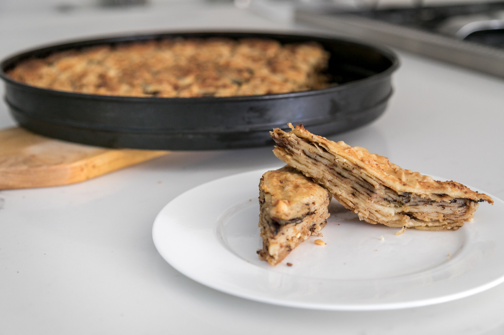

Description
Albanian fli is a traditional dish commonly prepared in the northern regions of Albania,
known for its layers of thin, crepe-like dough and savory filling. The recipe begins with making
the dough, which is typically a simple mixture of flour, water, and a pinch of salt, kneaded into
a smooth consistency. The dough is then rolled into thin sheets and cooked one by one in a large,
shallow pan. Once a layer of dough is cooked, it's brushed with melted butter and stacked with
additional layers. This process continues, and the fli is cooked until golden brown on both sides.
The dish is usually served as a main course or a side dish, often accompanied by yogurt or a salad.
Some variations of fli may include fillings such as cheese or minced meat, but the classic version is
made with just dough and butter, resulting in a rich, soft texture. Fli holds great cultural
significance in Albanian cuisine, especially during festive occasions and family gatherings, as it symbolizes
hospitality and tradition.
Ingredients needed
Optional Ingredients
- Cheese, (e.g., feta or ricotta) For a savory filling (optional).
- Minced Meat, Sometimes added for a heartier version (optional).
Steps
- Prepare the Dough:
- In a large bowl, mix the flour, a pinch of salt, and water to form a smooth dough.
The consistency should be similar to pizza dough but slightly softer.
- Knead the dough for about 5-10 minutes until it's smooth and elastic.
- Divide the Dough:
- Divide the dough into small portions, depending on how many layers you want to make.
- Roll the Dough:
- Take each portion of dough and roll it into a thin sheet, as thin as possible (similar to crepes).
- You can use a rolling pin or stretch it by hand if necessary.
- Cook the Layers:
- Heat a large, shallow frying pan (preferably non-stick) over medium heat.
- Place one layer of the dough into the pan and cook it for about 1-2 minutes, until the bottom is lightly golden.
- Brush the cooked side with melted butter.
- Stack the Layers:
- Place another layer of dough on top of the first, cooking and buttering it just like the previous one.
- Continue stacking layers and buttering each one. You can make as many layers as you like, but typically, fli is made with 6-8 layers.
- Cook the Final Layer:
- Once all layers are stacked, cook the final layer for 2-3 minutes until it’s golden brown on both sides.
- Serve:
- Remove the fli from the pan and let it cool slightly before slicing it into wedges.
- Serve with yogurt or a salad on the side for a traditional touch.